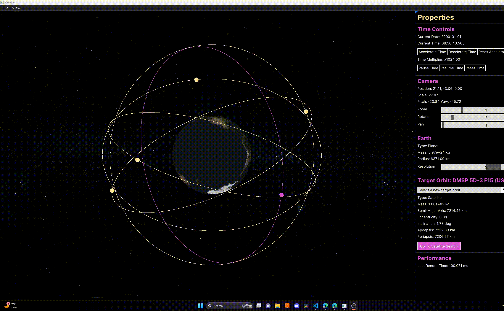

OrbitSim
High-performance real-time orbital mechanics simulator.

Overview
OrbitSim is a desktop application capable of simulating thousands of celestial objects in real-time. Built upon the **Walnut** application framework, it utilizes the raw performance of **C++** and **Vulkan** to render complex orbital paths without performance overhead. The system integrates with real-world data, allowing users to visualize active satellites directly from the Celestrak database.
System Architecture
Core Engine (C++)
A custom simulation loop handles physics updates and orbital propagation. It utilizes smart pointers (`std::shared_ptr`) for memory management of scenes like `EarthOrbitViewer` and `SatelliteSearch`.
Graphics (Vulkan/ImGui)
Rendering is handled via the Vulkan API for low-overhead graphics. The user interface is built with **Dear ImGui**, allowing for immediate-mode GUI rendering for satellite searching and simulation controls.
Data Pipeline (Python)
An integrated **ETL (Extract, Transform, Load)** pipeline written in Python fetches Two-Line Element (TLE) sets from Celestrak and converts them into an optimized JSON format for the C++ engine.
Key Features
- Real-Time Propagation: Simulates orbital mechanics for thousands of objects simultaneously using accurate physics models.
- Interactive Camera: Full control over the viewport with Pan, Rotate, and Zoom functionality to inspect specific orbits or get a wide view of the constellation.
- Satellite Search: A dedicated UI layer allows users to filter and locate specific satellites within the simulation scene.
- Data Integration: Seamlessly imports real-world satellite data (NORAD TLEs) processed via custom Python scripts.